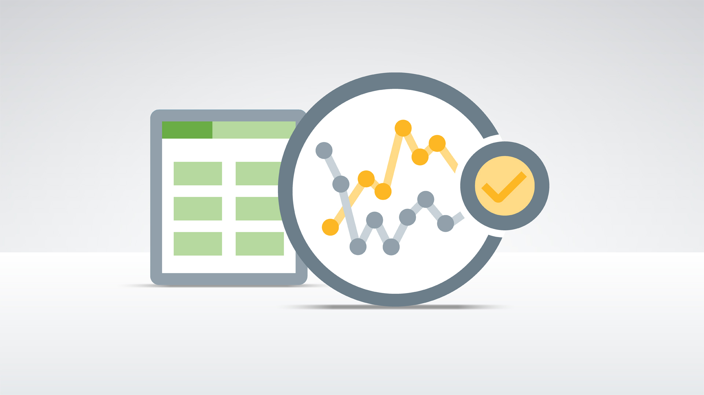

{% if session['lang'] == "tr" %}Ana Sayfa {% else %}Home Page{% endif %}

{% if session['lang'] == "tr" %}Sıcaklık Tahminleri{% else %}Temperature Predictions{% endif %}
{% if session['lang'] == "tr" %}Dakikalık olarak ölçülen verilere dayalı olarak ertesi günün tahminlerini gösterir. {% else %}It shows the predictions of the next day based on data measured per a minute.{% endif %}
{% if session['lang'] == "tr" %}Sayfaya git{% else %}Go to the page{% endif %}

{% if session['lang'] == "tr" %}Sensör İstatistikleri{% else %}Sensor Statistics{% endif %}
{% if session['lang'] == "tr" %}Periyodik biçimlerde ortalama, en düşük ve en yüksek sıcaklık değerlerini gösterir. {% else %}It shows the average, lowest and highest temperature values in periodic formats.{% endif %}
{% if session['lang'] == "tr" %}Sayfaya git{% else %}Go to the page{% endif %}
{% if session['lang'] == "tr" %}Yorumlar{% else %}Comments{% endif %}
{% if session['lang'] == "tr" %}Müşteri, Dashboard'daki her bir gelişme için olumlu ve olumsuz olarak kişisel yorumlarını belirtir. {% else %}Customer specifies personal comments as positive or negative for each event in the Dashboard.{% endif %}
{% if session['lang'] == "tr" %}Sayfaya git{% else %}Go to the page{% endif %}